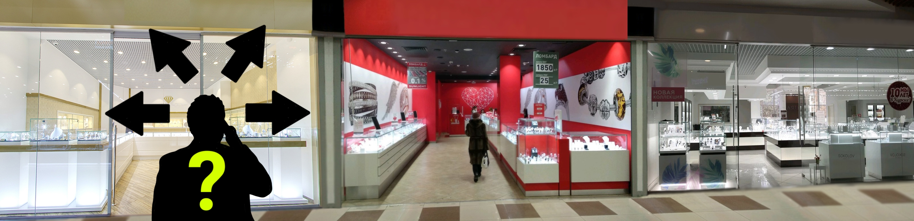
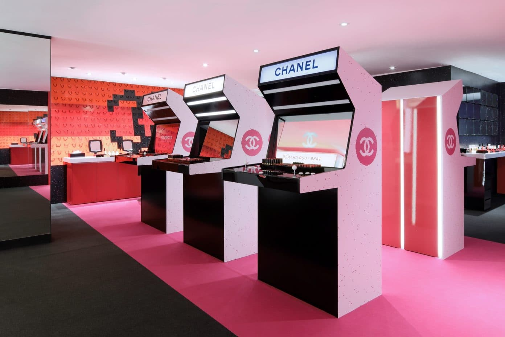
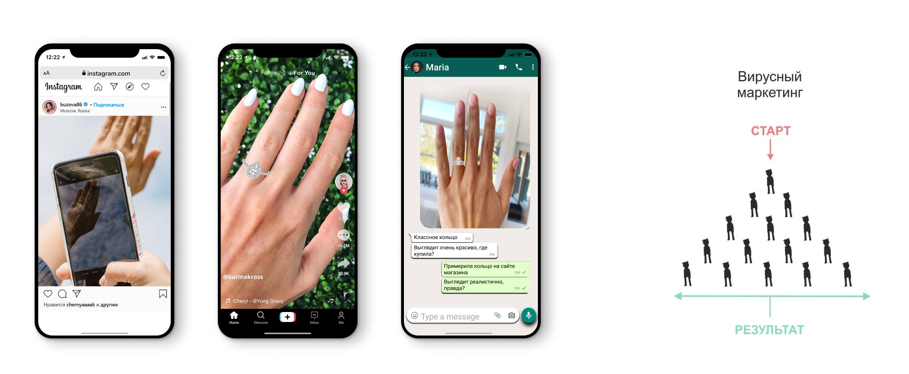

На ювелирный бизнес все чаще оказывает давление чрезмерная конкуренция, чем более глобальный характер приобретает бизнес и чем лучше становятся коммуникационные линии, тем сильнее давление на рентабельность. Под таким давлением только один выход:
Нужно делать все возможное, что бы продавать продукцию напрямую покупателям, вытесняя посредников, сокращая любые промежуточные цепочки принятия решений.
На массовом рынке кто же в конечном итоге получит прибыль, все больше и больше зависит от дополнительных аспектов - местоположения, экспозиции, маркетинга, имиджа и бренда, опыта, навыков продаж, даже аккредитации, истории и социальной активности. Но важнее всего то, что неизбежным требованием является присутствие в интернете, которое охватывает одновременно все вышеуказанные аспекты, минуя все соответствующие трансакционные издержки.
По данным агентства "Эксперт РА" и Высшей школы экономики, в феврале-апреле 2020 года продажи упали на 82% по сравнению с предыдущим годом, но доля их продаж через интернет выросла: крупнейший американский ювелирный ритейла Signet Jewelers Ltd отчитался о повышении онлайн-продаж в августе-октябре 2020 года на 71,4% по сравнению с прошлым годом. В мае 2020 года Tiffany & Co сообщила об удвоении продаж ювелирных изделий с бриллиантами через интернет.
Когда покупатели выбирают кольца в интернете, им трудно определиться, какая именно модель им подойдет: на фотографиях в интернет-магазине все кольца похожи друг на друга. Чтобы понять, как конкретное кольцо будет выглядеть на пальце, клиенту нужно приехать в магазин и примерить его.
Технология VR-примерки поможет клиентам увидеть, как кольцо из вашего интернет-магазина будет выглядеть в реальной жизни, а не промо-фотографиях. Для этого будет достаточно поднести свою руку к камере ноутбука или телефона, примерить кольцо онлайн и сразу же оформить заказ.
Если клиент не может примерить товар или увидеть его вживую, вероятность того, что покупка его разочарует, очень высока
Все крупные игроки ювелирного ритейла предлагают своим покупателям бесплатную доставку, примерку и возврат: как и в случае с онлайн-продажей одежды, покупателям важно, как украшение будет выглядеть именно на них, а не на модели интернет-магазина или промо-фотографиях. По данным агентства PickPoint, доля отказов покупателей при примерке одежды, обуви или аксессуаров варьируется от 40 до 70% в зависимости от категории.
Трехмерная вращающаяся модель кольца в интернет-магазине, которую можно детально рассмотреть, может навсегда решить проблему возврата из-за различия промо-фотографий и объемного облика изделий.
В одном торговом центре на одном этаже может быть больше 10 розничных точек конкурентов. Клиент испытывают стресс от обширности выбора.
В текущих условиях усиления конкуренции с учетом резкого падения платежеспособности населения борьба за внимание покупателя в ювелирной сфере возрастает. И здесь невозможно победить без использования современных технологий визуального мерчандайзинга.
Кроме того, людям в ТЦ часто скучно или нужно отвлечься, они нервничают и ищут утешения. Ювелирные украшения относятся к товарам импульсивного спроса и идеально закрывают психологические потребности тревожного клиента. Они сильно связаны с эмоцией: радость события, подарок в честь важной даты, признание в любви. Проблема в том, что внимание клиентов в ТЦ распределено хаотично, и целевой трафик растворяется в потоке избитых эмоциональных стимулов.
Потенциальный клиент сможет п римерить на стенде кольцо из вашего интернет-магазина, пока он проводит время в торговом центре, кинотеатре или аэропорту. Технология VR-примерки перебивает «выгоревшие» креативы:
Занятые игрой люди готовы больше покупать. Именно поэтому Chanel-Coco открывает в каждом городе по игровому шоу-руму, а мобильные приложения ювелирного ритейла подогревают азарт системами бонусов в мини-играх.
Сегодня прежние методы офлайн - коммерции больше не работают, клиенты стали избалованными и хотят иного подхода к себе. Как обратить к бренду внимание целевой аудитории? Привлечь его игровыми механиками или геймификацией, как это сделал легендарный законодатель моды и стиля - Chanel-Coco.
Каждый ювелирный бренд имеет собственное мобильное приложение, чтобы всегда быть у потребителя «в кармане». Они поощряют пользователей за скачивания с помощью бонусов и скидок. Но "игра" в скидку на рынке ювелирного ритейла давно перестала быть игрой и стала рутиной.
Геймификации в продажах хороша тем, что снижает рекламность продукта: покупатель воспринимает игру не как рекламу, а как источник получения эмоций, и у бренда в это время есть отличная возможность посеять в сознании клиента любое зернышко. Они должны сами догадаться, что именно нужно делать.
Для этого в помощь наша команда разработала следующие решения, которые ненавязчиво приведут вашего клиента к покупке:
Чтобы к бренду обращались регулярно, клиенту необходимо привить сильные отличительные привычки. Задать новый устойчивый тренд. Поменять привычку покупать.
В продвижении сайтов очень важно использовать комплексный подход, показывая поисковым машинам максимальную естественность развития веб-ресурса. Главными критериями ранжирования в поисковых системах являются количество новых посетителей и средняя продолжительность их сеанса.
Один из самых эффективных способов увлечь целевую аудиторию – создать виральный (вирусный) контент. Если контент нравится целевой аудитории, она охотно им делится в социальных сетях, блогах, мессенджерах и т.д. Интерактивный контент работает намного эффективнее статичного. Его главная сила – нарастающее доверие к бренду без навязчивого принуждения. Такой контент максимально информирует о бренде, и пользователь продолжает изучать материал, прежде чем совершить покупку.
По данным Stanford University и Microsoft Research, только 1% всего онлайн-контента становится вирусным. Создать вирусный контент действительно сложно, он должен быть:
Когда клиент зайдет на сайт вашей компании – ему будет достаточно поднести свою руку к камере ноутбука или телефона, примерить кольцо онлайн и сразу же оформить заказ.
Время пребывания пользователя на сайте(Dwell Time) – важный показатель качества ресурса, поэтому обходить его стороной нельзя. В SEO индустрии введен специальный термин – Dwell Time, определяющий авторитетность ресурса «в глазах» поисковиков.
Dwell Time – это величина, вычисляемая на основании пользовательского поведения. Он совмещает сразу 3 параметра:
Большинство SEO – агентств работают при помощи черных методов оптимизации - предполагающие автоматизацию процессов, массовость и нарушение основных правил, установленных поисковиками. Основная цель черной оптимизации – быстрый захват позиций в топах выдачи. Поисковые системы с этим активно борются, и результат оптимизации сохранится на срок до нескольких месяцев из-за штрафных санкций алгоритмов ранжирования поисковых систем. В итоге оказывается, что подняться в топ поисковой выдачи настолько конкурентной среды как ювелирная индустрия – чрезвычайно сложно.
Благодаря повышенному уровню интереса потребителя, продолжительность посещения каждого клиента на сайте увеличивается. Интерактивное взаимодействие на сайте выделяет ресурс из серой массы конкурентов и продвигает в топ.
— Хизер Эндрю (Heather Andrew) Генеральный директор Neuro-Insight UK 2018В Neuro-Insight мы исследовали реакцию мозга на многие различные медиа, и это исследование показало, что дополненная реальность обеспечивает исключительно высокий уровень внимания — на 45% выше, чем тот, который мы в среднем видим при просмотре ТВ или простом интернет-сёрфинге.
Многие компании сейчас работают по всему миру, и их присутствие приобретает все более совершенные формы и все быстрее. Виртуальные связи сделают процесс покупки в Интернет-магазине почти таким же легким и привлекательным, как в реальном. Мы уже видим, как профессионалы по продажам ювелирных изделий общаются напрямую с потребителем, демонстрируют изделия крупным планом и показывают изображения других имеющихся изделий. Достаточно взглянуть на Instagram Live, чтобы привести один пример, который становится все более распространенным. Например, в условиях пандемии потребители стали выбирать такие ювелирные украшения, которые хорошо смотрятся в кадре во время видеоконференций и онлайн-созвонов. Появился даже новый термин "Zoom-worthy jewelry" - украшения, в которых стоит выйти в Zoom. Для подавляющей части рынка такой общенациональный или глобальный тренд доступа займет реальную часть рынка.
Даже домá, которые являются самой дорогой покупкой, которую когда-либо делают, теперь продаются на основе виртуальных показов! Да, пандемия убила открытые показы домов, но продажи резко выросли. Из-за пандемии прекратились закрытые показы ювелирных изделий в магазинах, но мы видим небольшое количество виртуальных закрытых показов. Tiffany уже показала, насколько важным может быть их онлайн-бизнес, и все ведущие мировые бренды высокого класса стремительно развивают эти возможности. Все это не исчезнет, когда пандемия будет побеждена. Совсем наоборот.
В 2021 году эксперты ювелирной индустрии отмечают 4 основных тренда, которые будут определять развитие ювелирной индустрии в ближайшие несколько лет: увеличение доли онлайн-покупок, интерес к синтетическим украшениям, трансформация потребительских привычек и маркетинга ювелирных украшений.
Спрос на ювелирные украшения снизился, но выросла доля их продаж через интернет: крупнейший американский ювелирный ритейла Signet Jewelers Ltd отчитался о повышении онлайн-продаж в августе-октябре 2020 года на 71,4% по сравнению с прошлым годом. В мае 2020 года Tiffany & Co сообщила об удвоении продаж ювелирных изделий с бриллиантами через интернет.
Мероприятие в реальном магазине может привлечь десятки людей, а может быть, и сотни. Виртуальное мероприятие может привлечь тысячи людей, а если в нем участвуют знаменитости, то сотни тысяч. Масштаб того, чего можно достичь, значительно возрастет. И никто даже не подумает отказываться от глобального охвата - доступа, который предоставляют новые технологии.
Инструменты реализации цифрового потенциала:
Практически любой потребитель, даже неопытный в техническом плане, полностью понимает, что самое первое, что он сделает, даже еще только подумав о покупке чего-либо, кроме литра молока, - это поискать в Интернете. И это правда, независимо от того, как долго у этого потребителя есть отношения с ювелирным магазином. Если смотреть с другой стороны, любой розничный торговец, который не полностью осознает тот факт, что выживание сейчас зависит от того, насколько хорошо они представляют себя в сети, фактически устарел. Им приходит конец.
Устаревание бывает разным. «Игра» в скидку давно перестала быть игрой и превратилась в рутину. Для того чтобы держать вовлеченность аудитории на прежнем уровне, необходимо регулярно создавать новые визуальные составляющие и постоянно держаться с клиентом на контакте.
Отличительной чертой ювелирных украшений является их разнообразие. Это также во многом является причиной отсутствия крупномасштабного брендинга. Сложно заниматься брендингом изделий или линий, которые так легко скопировать, подделать или подражать. Миллионы ювелирных изделий продаются в очень малых количествах. Даже самые популярные профильные продукты, например, серьги-гвоздики, производятся тысячами компаний, причем не миллионами штук, а в основном сотнями. Но в этих случаях нет места для брендинга, так как прибыли очень низкие. И брендинг этих товаров принадлежит магазинам. Именно им нужно создавать репутацию. А местные ритейлеры сами подберут пару для покупателя, отвечающую всем особым требованиям, согласованным с покупателем. И это отличный пример брендинга, ориентированного на обслуживание, а не на товар.
Даже крупные бренды, особенно розничные бренды, время от времени щедро тратят средства, пытаясь создать привлекательную идентичность, бренд, который публика может быстро принять и встретить с восторгом. Это действительно сложно.